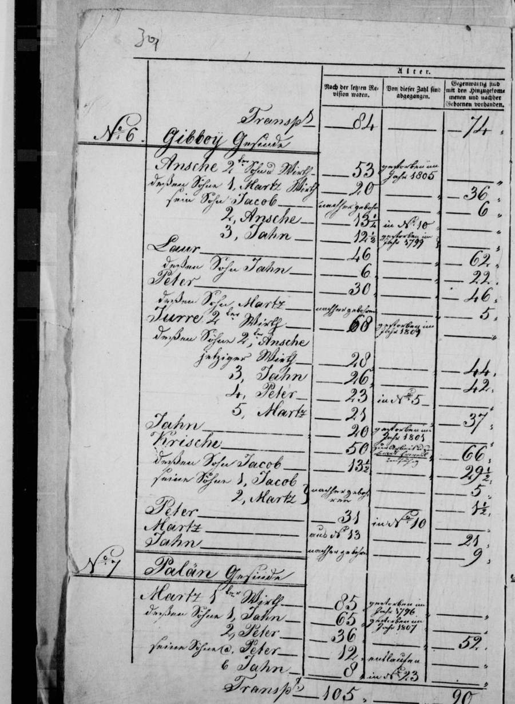
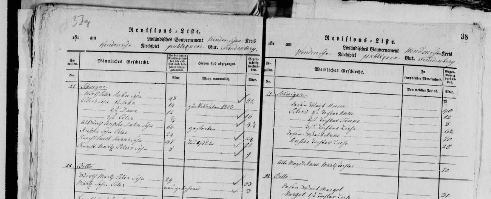
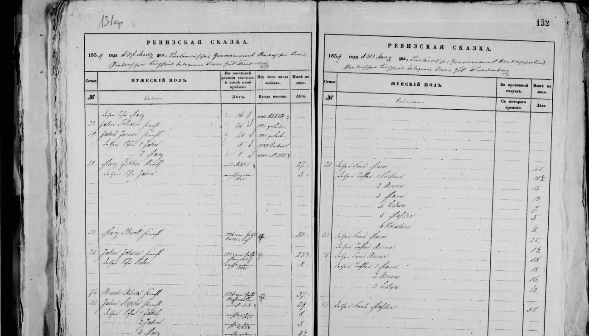
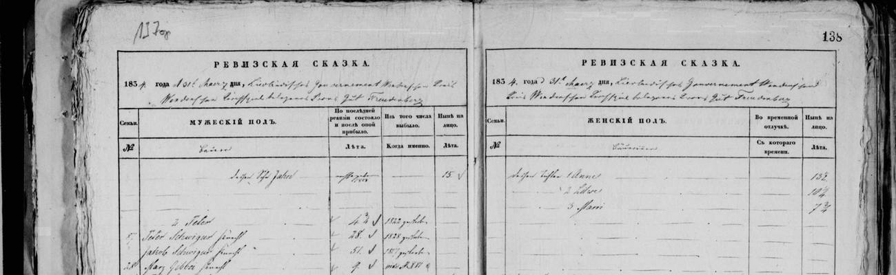
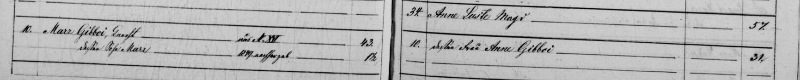
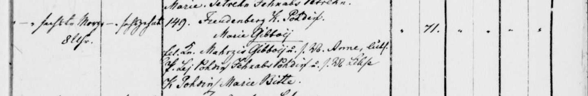
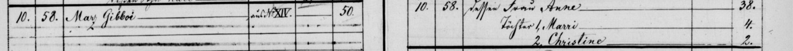

Mārcis Gibboy b. 1807
Peter's 3× great-grandfather.
Also recorded as Mahrzis Gibboy (1853); Marz Gibboi (revisions 1850, 1857); Mārcis Ģibols.
Mārcis Gibboy was born in 1807 (according to an online family tree)2, the son of Pēteris Ģibols and unnamed wife of Pēteris Ģibols3,4,5,17. He married Anna Mežciema in Oct 1847 in Priekuļi, Cēsis district, Vidzeme, Latvia (according to an online family tree)18. He has died (according to an online family tree)16, but the date of death is not yet documented.
Family
- Parents
- Pēteris Ģibols 1765–1811 and unnamed wife of Pēteris Ģibols documented
- Wife
- Anna Mežciema b. 1819 · married in Oct 1847 in Priekuļi, Cēsis district, Vidzeme, Latvia
- Children
- Marija Gibboja 1853–1925 documented
- Mārcis 1848–1853 documented
- Kristīne Gibboy b. 1856 documented
- Children
- Jānis Gibols b. 1847 probable
Life events
| Event | Date | Place and details |
|---|---|---|
| Born | 1807 | According to an online family tree2 |
| Lived | Aug 1811 | Priekuļi, Cēsis district, Vidzeme, Latvia3 |
| Lived | 1816 | Priekuļi, Cēsis district, Vidzeme, Latvia4 |
| Lived | 1826 | Podiņi farm, Priekuļi, Cēsis district, Vidzeme, Latvia5,6,7 |
| Lived | 12 Apr 1834 | Podiņi farm, Priekuļi, Cēsis district, Vidzeme, Latvia Old Style (Julian) date: 31 Mar 18348,9,10 |
| Lived | 25 Sep 1850 | Priekuļi, Cēsis district, Vidzeme, Latvia Old Style (Julian) date: 13 Sep 185011,12 |
| Lived | 18 Aug 1853 | Kalna-Podis farm, Priekuļi, Cēsis district, Vidzeme, Latvia13 |
| Lived | 5 Dec 1857 | Rauguļi farm, Priekuļi, Cēsis district, Vidzeme, Latvia Old Style (Julian) date: 23 Nov 185714,15 |
| Died | not yet documented | According to an online family tree16 |
Records









Open questions
Sources
- MyHeritage family tree 'Dzimta' of Peter's third cousin (his family site), member GEDCOM export of 26 Oct 2026, I500599 (person-6500599), GEDCOM lines 17634–17694.
NAME Mārcis /Ģibols/
- MyHeritage family tree 'Dzimta' of Peter's third cousin (his family site), member GEDCOM export of 26 Oct 2026, I500599 (person-6500599), GEDCOM lines 17634–17694.
BIRT · 1807
- Priekuļi (Freudenberg) soul revision 1811, No. 6 Gibboy Gesinde, LVVA f. 199, apr. 1, l. 112, image 9 (p. 3v), LVVA f. 199, apr. 1, l. 112, image 9.
No 6 Gibboy Gesinde / Ansche 1ster Wirth | 53 | gestorben im Jahr 1805 | — / deßen Söhne 1, Martz Wirth | 20 | — | 36 / ... / Laur | 46 | — | 62 / deßen Sohn Jahn | 6 | — | 22 / Peter | 30 | — | 46 / deßen Sohn Martz | — | nachher gebohren | 5
Translation: No. 6 Gibboy farm: Ansche, 1st farmer, 53 [in 1795], died in 1805; his sons: 1. Martz, farmer, 20 -> 36 ... Laur, 46 -> 62; his son Jahn, 6 -> 22; Peter, 30 [in 1795] -> 46 [in 1811]; his son Martz, born since, 5 [in 1811].
Priekuļi (Freudenberg) 6th soul revision (dated August 1811, LVVA f. 199, apr. 1, l. 112, image 9, p. 3v), farm No. 6 Gibboy Gesinde: in the first household (headed by 1st farmer Ansche, 53 in 1795, died 1805, and his son Martz Wirth, 20 -> 36, with Laur, 46 -> 62, and Laur's son Jahn, 6 -> 22) is listed farmhand Peter, age 30 in 1795, now age 46 in 1811 (born c. 1765), and his son Martz ('deßen Sohn Martz'), born after 1795 ('nachher gebohren'), age 5 in 1811 (born c. 1806).
- Priekuļi (Freudenberg) soul revision 1816, No. 21 Schwigur, LVVA f. 199, apr. 1, l. 112, image 43 (ff. 37v–38r), LVVA f. 199, apr. 1, l. 112, image 43.
No 21 Schwigur / Wirth Peter Jahn Sohn | 46 | — | 50 / ... / Knecht Martz Peters Sohn | 5 | — | 9
Translation: No. 21 Schwigur [Švīguļi]: Farmer Peter, Jahn's son, 46 -> 50 ... farmhand Martz, Peter's son, 5 [in 1811] -> 9 [in 1816].
Priekuļi (Freudenberg) 7th soul revision (1816, LVVA f. 199, apr. 1, l. 112, image 43, ff. 37v–38r), farm No. 21 Schwigur: at the bottom of the household of farmer Peter Jahn Sohn (46 -> 50) is 'Knecht Martz Peters Sohn', age 5 at the 1811 revision, now age 9 in 1816 (born c. 1806/07). In the 1826 surname revision at No. 21 Schwigur (image 75), this exact entry is assigned surname 'VII Gibboi' and cross-referenced to No. 16 Pohding ('VII Gibboi | Marz, Peters Sohn s. in No 16 | 9').
- Priekuļi (Freudenberg) surname revision 1826, No. 1 Meschzeem (surname XIV Meschzeem), LVVA f. 199, apr. 1, l. 112, image 69 (ff. 64v–65r), LVVA f. 199, apr. 1, l. 112, image 54.
16. Pohding / Jacob Jahns Sohn Wirth | 29 | 1825 gestorben | — ‖ XXXI Pohdin | Marri deßen Wittwe s. unten verheirathet an Marz Gibboi / ... / VII Gibboi | Marz, Peters Sohn Wirth aus No 21 | — | 19 ‖ VII Gibboi | Marri deßen Wb, sieh oben Wittwe des Jacob | 35
Translation: No. 16 Pohding [Podiņi]: Jacob, Jahn's son, farmer, 29 [in 1816], died in 1825; [surname XXXI Pohdin] Marri, his widow, see below married to Marz Gibboi ... [surname VII Gibboi] Marz, Peter's son, farmer, from No. 21, 19; [surname VII Gibboi] Marri, his wife, see above widow of Jacob, 35.
Priekuļi (Freudenberg) 1826 surname revision (LVVA f. 199, apr. 1, l. 112, image 69, ff. 64v–65r), farm 16. Pohding: the previous farmer Jacob, Jahn's son ('Jacob Jahns Sohn Wirth', age 29 in 1816) died in 1825 ('1825 gestorben'), leaving son Laur (2¾ -> 12¾), daughters Triene (10¾), Anne (8), and Marri (6), and widow Marri ('XXXI Pohdin | Marri deßen Wittwe s. unten verheirathet an Marz Gibboi'). At the bottom of the same farm, 'VII Gibboi | Marz, Peters Sohn Wirth aus No 21', age 19 in 1826 (born c. 1806/07), has come from No. 21 Schwigur, married Jacob's 35-year-old widow Marri ('VII Gibboi | Marri deßen Wb, sieh oben Wittwe des Jacob | 35'), and become the farmer (Wirth) of 16. Pohding.
- Priekuļi (Freudenberg) surname revision 1826, No. 1 Meschzeem (surname XIV Meschzeem), LVVA f. 199, apr. 1, l. 112, image 75 (ff. 70v–71r), LVVA f. 199, apr. 1, l. 112, image 54.
21 Schwigur / ... / VII Gibboi | Marz, Peters Sohn s. in No 16 | 9 | —
Translation: No. 21 Schwigur [Švīguļi]: ... [surname] VII Gibboi: Marz, Peter's son, see in No. 16 [Pohding], 9 [in 1816].
Priekuļi (Freudenberg) 1826 surname revision (LVVA f. 199, apr. 1, l. 112, image 75, ff. 70v–71r), farm 21 Schwigur: 'VII Gibboi | Marz, Peters Sohn s. in No 16 | 9 | —', recording that Martz, Peter's son (age 9 at No. 21 Schwigur in the 1816 revision), took surname No. VII Gibboi and moved to No. 16 Pohding.
- MyHeritage family tree 'Dzimta' of Peter's third cousin (his family site), member GEDCOM export of 26 Oct 2026, I500599 (person-6500599), GEDCOM lines 17634–17694.
1826.gadā Mārcis (19) ar sievu Mariju (35) dzīvo 16 Podiņu mājās, Priekuļos, atnācis no XXI Žvīguru mājām
His note on the 1826 soul revision of Priekuļi, http://lvva-raduraksti.lv/lv/menu/lv/13/ig/14/ie/5962/book/32503.html, frame 73.
- Priekuļi (Freudenberg) soul revision 1834, XVI. Pohding, family 28 (Marz Gibboi Wirth), LVVA f. 199, apr. 1, l. 112, image 133 (ff. 131v–132r), LVVA f. 199, apr. 1, l. 112, image 133.
28 | Marz Gibboi Wirth | — | aus N XXI | 27 / dessen Sohn Jahn | — | nachher geboren 1831 | 3 ‖ 28 | dessen Frau Marri | 43 / dessen Töchter 1 Trihne | 18¾ / 2 Anne | 15 / 3 Marri | 13 / 4 Lihse | 7 / 5 Mahde | 5 / 6 Kristine | ¼
Translation: Family 28: Marz Gibboi, farmer, from No. XXI, 27; his son Jahn, born after [in] 1831, 3. His wife Marri, 43; daughters: 1. Trihne, 18¾; 2. Anne, 15; 3. Marri, 13; 4. Lihse, 7; 5. Mahde, 5; 6. Kristine, ¼.
Priekuļi (Freudenberg) 8th soul revision, dated 31 March 1834 O.S. (= 12 April 1834 N.S., LVVA f. 199, apr. 1, l. 112, image 133, ff. 131v–132r), farm XVI. Pohding, family no. 28: farmer Marz Gibboi ('Marz Gibboi Wirth | aus N XXI | 27'), transferred from No. XXI Schwigur, age 27 in 1834; his son Jahn ('dessen Sohn Jahn | nachher geboren 1831 | 3', who died in 1844 per the 1850 revision); his 1st wife Marri ('dessen Frau Marri | 43'); three stepdaughters from Marri's first marriage to Jakob Pohding (1. Trihne 18¾, 2. Anne 15, 3. Marri 13); and three daughters from his marriage to Marri (4. Lihse 7, 5. Mahde 5, 6. Kristine ¼).
- Priekuļi (Freudenberg) soul revision 1834, XXI. Schwigur, family 28, LVVA f. 199, apr. 1, l. 112, image 139 (ff. 137v–138r), LVVA f. 199, apr. 1, l. 112, image 139.
28. | Marz Gibboi Knecht | 9. | vide N XVI
Translation: Family 28: Marz Gibboi, farmhand, 9 [in 1816], see No. XVI [Pohding].
Priekuļi (Freudenberg) 8th soul revision, dated 31 March 1834 O.S. (= 12 April 1834 N.S., LVVA f. 199, apr. 1, l. 112, image 139, ff. 137v–138r), farm XXI. Schwigur, family no. 28: '28. | Marz Gibboi Knecht | 9. | vide N XVI', cross-referencing the 9-year-old farmhand from the 1816 revision directly to XVI. Pohding (image 133).
- MyHeritage family tree 'Dzimta' of Peter's third cousin (his family site), member GEDCOM export of 26 Oct 2026, I500599 (person-6500599), GEDCOM lines 17634–17694.
1834.gadā Mārcis (27) ar sievu Mariju (31) un dēlu Jāni (3) dzīvo XVI Podiņu mājās, Priekuļos, atnācis no XXI Žvīguru mājām
His note on the 1834 soul revision of Priekuļi, http://lvva-raduraksti.lv/lv/menu/lv/13/ig/14/ie/5962/book/32503.html, frame 133. A first wife Marija (b. c. 1803) and a son Jānis (b. c. 1831; his tree has Jānis b. 1847, probably a slip, since he notes Jānis recruited c. 1850).
- Priekuļi (Freudenberg) soul revision 1850, family 10 (Marz Gibboi), LVVA f. 199, apr. 1, l. 112, image 291 (pp. 295v–296), LVVA f. 199, apr. 1, l. 112, image 291.
10. | Marz Gibboi, Knecht[?] | aus No. XVI | 43. / dessen Sohn Marz | 1849 nachgeboren | 1½. ‖ 10. | dessen Frau Anne Gibboi | 31.
Translation: Family 10: Mārcis Gibboi, farmhand[?], from farm XVI, 43; his son Mārcis, born 1849, 1½. His wife Anne Gibboi, 31.
1850 soul revision, family 10: Marz Gibboi, Knecht[?], 'aus No. XVI' (from the Podiņi farm), 43; his son Marz, born 1849, 1½; his wife Anne Gibboi, 31. The farm is not named on this frame; the 1857 list puts him at no. XIV (Luste) in 1850.
- MyHeritage family tree 'Dzimta' of Peter's third cousin (his family site), member GEDCOM export of 26 Oct 2026, I500599 (person-6500599), GEDCOM lines 17634–17694.
1850.gadā Mārcis (43) ar sievu Annu (31) un dēlu Mārci (1 1/2) dzīvo IV Lustes mājās, Priekuļos, atnācis no XVI Podiņu mājām
His note on the 1850 soul revision of Priekuļi, http://lvva-raduraksti.lv/lv/menu/lv/13/ig/14/ie/5962/book/32503.html, frame 291.
- Baptism of Marie Gibboij, 1853 no. 149, Freudenberg K. Pohdis.
[August] — sechsten Morg. 8 Uhr | — sechzehnten | 149. Freudenberg K. Pohdis. Marie Gibboij. Lett. Kn. Mahrzis Gibboij u. s. W. Anne, luth.
Worked as a Latvian farmhand ('Lett. Kn. Mahrzis Gibboij') at the Kalna-Podis farm ('Freudenberg K. Pohdis') on the Priekuļi estate when his daughter Marie was born there on 6/18 August 1853 and baptised on 16/28 August 1853.
- Priekuļi (Freudenberg) soul revision 1857, Rauguļi farm, family 10/58 (Marz Gibboi), LVVA f. 77, apr. 14, l. 344, image 16 (pp. 11v–12), LVVA f. 77, apr. 14, l. 344, image 16.
10. | 58. | Marz Gibboi | aus No. XIV. | 50. ‖ 10. | 58. | dessen Frau Anne | 38. / Töchter 1. Marri | 4. / 2. Christine | 2.
Translation: Family 10 (9th rev.) / 58 (10th rev.): Mārcis Gibboi, from farm no. XIV [at the last revision], now 50. His wife Anne, 38; daughters 1. Marija, 4; 2. Kristīne, 2.
1857 soul revision, family 10/58: Marz Gibboi, at the last revision 'aus No. XIV' (from the Luste farm), now 50; his wife Anne 38; daughters 1. Marri 4 and 2. Christine 2.
- MyHeritage family tree 'Dzimta' of Peter's third cousin (his family site), member GEDCOM export of 26 Oct 2026, I500599 (person-6500599), GEDCOM lines 17634–17694.
1857.gadā Mārcis (50) ar sievu Annu (38) un meitām Mariju (4) Kristīni (2) dzīvo Rauguļu mājās VI, Priekuļos, atnācis no XIV Lustes mājām
His note on the 1857 soul revision of Priekuļi (Freudenberg), http://lvva-raduraksti.lv/lv/menu/lv/13/ig/14/ie/5962/book/33313.html, frame 16: Mārcis 50, wife Anna 38, daughters Marija 4 and Kristīne 2, at Rauguļi (VI), come from Luste (XIV). The Marija aged 4 is our Marija (b. 6/18 Aug 1853 at Kalna-Pohdis, Priekuļi): lead marija-gibols-parents.
- MyHeritage family tree 'Dzimta' of Peter's third cousin (his family site), member GEDCOM export of 26 Oct 2026, I500599 (person-6500599), GEDCOM lines 17634–17694.
DEAT · Y (marked deceased; no date or place)
- MyHeritage family tree 'Dzimta' of Peter's third cousin (his family site), member GEDCOM export of 26 Oct 2026, family F500355: I500599 Mārcis Gibboy, child of I500946 Pēteris Ģibols × I501829 (no name).
- MyHeritage family tree 'Dzimta' of Peter's third cousin (his family site), member GEDCOM export of 26 Oct 2026, family F500231 (I500599 Mārcis Gibboy × I500600 Anne Gibboy).
MARR 1847. Okt Priekuļi